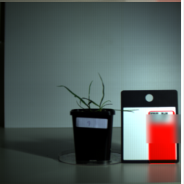
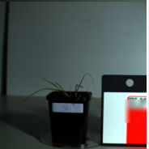
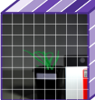

Measure changes
Follow the same pot across visits, retaining foliage masks and records of usable sensor measurements.
Annual ryegrass research
RyeChron follows how plants respond over time, combining spectral sensing and AI to study herbicide resistance.
Our goal is earlier evidence to guide testing and weed-control decisions, before surviving weeds replenish the seedbank.
Research prototype. Independent-population and field validation are next.
The same plants, over time


Scheduled visit 23. Original study photographs. Population labels do not establish a symptom-onset threshold.
The research approach
Plants change as they grow. RyeChron pairs repeated measurements of treated plants with untreated controls, so the model can compare responses over the same interval.

Follow the same pot across visits, retaining foliage masks and records of usable sensor measurements.
Use untreated plants to characterise ordinary changes and variability over the same interval.
Combine reliable measurements and update a separate memory of evolving response evidence.
The controlled-screenhouse study includes glyphosate, paraquat/diquat and chlorsulfuron at two treatment doses, alongside untreated controls. The 1,242 scheduled pot–visit records do not all contain complete multimodal observations.
Early evidence
Evaluation holds out complete pots. Results average three outer folds and all 23 scheduled visits, using observations available through each visit.
+5.7percentage points in balanced accuracy
CCRA combines control-calibrated responses with reliability-aware fusion and prediction-error-driven response memory. Both models use the same three sensing modalities.
CCRA also achieves 98.4% mean AUROC. These results describe classification performance, rather than a measured reduction in test turnaround.
What remains to be established: each resistance class currently has one source population. The study demonstrates within-cohort discrimination. Generalisation to independent populations, field performance and detection before visible symptoms need further validation.
Industry collaboration
The opportunity is a jointly scoped validation pilot. Potential applications include more targeted testing, tailored herbicide selection and product evaluation. These applications require validation beyond the current cohort.
| Partner | Contribution to a pilot | Potential opportunity |
|---|---|---|
| Growers and agronomists | Additional populations and trial sites | Evidence relevant to local weed-control decisions |
| Testing providers | Independent resistance assays and testing workflows | Evaluate a complementary screening service |
| Herbicide companies | Products, trial networks and co-funding | Support tailored herbicide selection and comparative product evaluation |
| Agtech companies | Sensors and engineering | Assess a practical screening tool or sensor feature |
First, validate independent populations against resistance assays. Then assess field performance, practical sensing requirements and service feasibility.
Project resources
RyeChron: Learning Longitudinal Multimodal Spectral Representations for Early Herbicide Resistance Prediction.
The dataset, masks, metadata and evaluation splits are planned for release upon acceptance. This page introduces the research and prospective industry collaboration.
Scan to explore the project and partnership opportunities.